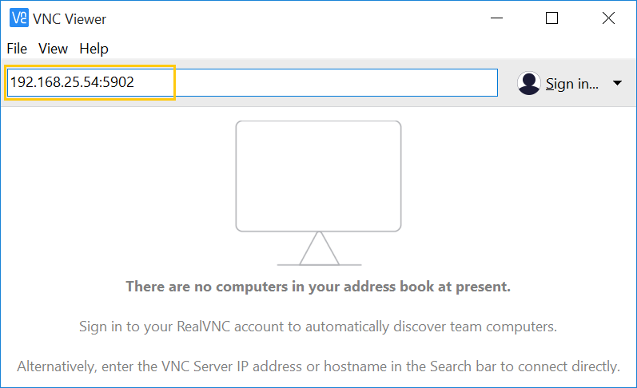

使用 VNC 通过远程桌面连接到主机¶
本指南介绍如何使用 VNC 连接到远程 Clear Linux* OS 主机。
VNC 是一个基于 GUI 的客户端-服务器工具，使用它可以通过远程桌面连接到 Clear Linux OS 主机。
在主机上安装 VNC 服务器和其他组件¶
要配置 VNC，使其能在 Clear Linux OS 主机上正常工作，请安装以下捆绑包：
- desktop-autostart：安装 GDM，将其设置为在引导时自动启动，并安装 TigerVNC 查看器。
- vnc-server：安装 TigerVNC 服务器。
遵照这些步骤操作：
登录 Clear Linux OS 主机并获得 root 特权。
sudo -s
安装 Clear Linux OS 捆绑包。
swupd bundle-add desktop-autostart vnc-server
重新引导 Clear Linux OS 主机。
在主机上配置 VNC-server-start 方法¶
有三种方法可以用来在 Clear Linux OS 主机上配置和启动 VNC 服务器：
| 属性 | 方法 1：手动启动 VNC 会话 | 方法 2：通过 systemd 服务脚本自动启动 VNC 会话 | 方法 3：通过 GDM 身份验证创建多用户登录 |
|---|---|---|---|
| 描述 | 这里使用的是传统方法，即通过 SSH 登录 Clear Linux OS 主机，手动启动 VNC 会话以获取显示 ID，并通过提供显示 ID 来连接到它。 | 系统管理员使用预先分配的显示 ID 来设置 systemd 服务脚本。建立一个 VNC 连接，并提供预先分配的显示 ID。 | 系统管理员将 GDM 配置为接受连接请求。与 Clear Linux OS 主机建立 VNC 连接时，您会看到 GDM 登录屏幕，并像本地用户一样进行身份验证。 |
| 谁来配置 VNC 设置？ | 您 | 系统管理员 | 系统管理员 |
| 谁来启动 VNC 会话？ | 您 | 设置为由系统管理员在引导时自动启动 | 设置为由系统管理员在引导时自动启动 |
| 谁来终止 VNC 会话？ | 您 | 您 | 系统管理员可以完全禁用 VNC 服务 |
| 是否需要提供 VNC 密码以执行身份验证？ | 是 | 是 | 不需要。通过 GDM 使用 Clear Linux OS 帐户用户名和密码 |
虽然这三种方法可以在同一个 Clear Linux OS 主机上共存，但我们建议您选择一种适合您的需求的方法。
为简单起见，本指南的其余部分将这些方法称为方法 1、方法 2 和方法 3。
方法 1：手动启动 VNC 会话¶
您（和每个用户）必须执行这些步骤来初始化 VNC 设置。
登录。
打开一个终端模拟器。
使用 vncserver 命令启动 VNC。由于这是您第一次启动 VNC，它会添加默认配置文件，并要求您设置 VNC 密码。
vncserver
结果示例：
You will require a password to access your desktops. Password: Verify: Would you like to enter a view-only password (y/n)? n xauth: file /home/vnc-user-a/.Xauthority does not exist New 'clr-linux:2 (vnc-user-a)' desktop is clr-linux:2 Creating default startup script /home/vnc-user-a/.vnc/xstartup Creating default config /home/vnc-user-a/.vnc/config Starting applications specified in /home/vnc-user-a/.vnc/xstartup Log file is /home/vnc-user-a/.vnc/clr-linux:2.log
完成后，您可以在主目录中的
.vnc目录中找到隐藏的默认配置文件和密码文件。VNC 会话启动并显示一个唯一的显示 ID，该 ID 是主机名和冒号 “:” 后面的数字。在上面的例子中，显示 ID 是 2。在稍后的步骤中，您将向 VNC 查看器应用程序提供显示 ID 以建立连接。
使用 vncserver -kill :[display ID] 命令暂时终止活动的 VNC 会话。使用您的活动 VNC 会话显示 ID 替换 [display ID]。例如：
vncserver -kill :2
注解
如果您不记得活动会话显示 ID，请使用 vncserver -list 命令查找它。
可选配置：
- 要自定义屏幕大小、安全类型等设置，请修改
$HOME/.vnc/config文件。 - 要自定义启动时运行的应用程序，请修改
$HOME/.vnc/xstartup文件。
- 要自定义屏幕大小、安全类型等设置，请修改
方法 2：通过 systemd 服务脚本自动启动 VNC 会话¶
要使用此方法配置 VNC，您必须具有 root 特权。您将为所有潜在的 VNC 用户设置一个 systemd 服务文件，而且这些用户拥有自己预先指定的唯一显示 ID。
登录并获得 root 特权。
sudo -s
确保用户帐户已经存在。使用以下命令列出所有用户。
cut -d: -f1 /etc/passwd
创建路径
/etc/systemd/system。mkdir -p /etc/systemd/system
创建 systemd 服务脚本文件
vncserver@:[X].service，其中 [X] 是显示 ID。对于/etc/systemd/system中的每个用户，必须为每个用户分配一个唯一的显示 ID。请确保在 User 字段中输入正确的用户名。以下示例显示了用户 vnc-user-b 已分配了显示 ID 5。# cat > /etc/systemd/system/vncserver@:5.service << EOF [Unit] Description=VNC Remote Desktop Service for "vnc-user-b" with display ID "5" After=syslog.target network.target [Service] Type=simple User=vnc-user-b PAMName=login PIDFile=/home/%u/.vnc/%H%i.pid ExecStartPre=/bin/sh -c '/usr/bin/vncserver -kill %i > /dev/null 2>&1 || :' ExecStart=/usr/bin/vncserver %i -geometry 2000x1200 -alwaysshared -fg ExecStop=/usr/bin/vncserver -kill %i [Install] WantedBy=multi-user.target EOF
让每个用户登录他们的帐户，并使用 vncpasswd 命令设置 VNC 密码，然后继续下一步。
启动 VNC 服务脚本，并为每个用户将其设置在引导时自动启动。使用显示 ID 替换 [X]。
systemctl daemon-reload systemctl start vncserver@:[X].service systemctl enable vncserver@:[X].service
启动服务后，确认它们是否正在运行。
systemctl | grep vnc以下示例显示了已成功为显示 ID 为 5 的用户 vnc-user-b 以及显示 ID 为 6 的用户 vnc-user-c 启动两个 VNC 会话。
# systemctl | grep vnc vncserver@:5.services loaded active running VNC Remote Desktop Service for "vnc-user-b" with display ID "5" vncserver@:6.services loaded active running VNC Remote Desktop Service for "vnc-user-c" with display ID "6" system-vncserver.slice loaded active active system-vncserver.slice
方法 3：通过 GDM 身份验证实现多用户登录¶
使用此方法时，系统将 VNC 配置为监听端口 5900 的 systemd 服务，并将 GDM 配置为接受来自 VNC 的访问请求。与 Clear Linux OS 主机建立 VNC 连接时，您会看到 GDM 登录屏幕，并像本地用户一样进行身份验证。您必须具有 root 特权才能执行此配置。
登录并获得 root 特权。
sudo -s
创建路径
/etc/systemd/system。mkdir -p /etc/systemd/system
创建 systemd 套接字文件
xvnc.socket，并添加以下内容：# cat > /etc/systemd/system/xvnc.socket << EOF [Unit] Description=XVNC Server on port 5900 [Socket] ListenStream=5900 Accept=yes [Install] WantedBy=sockets.target EOF
创建 systemd 服务文件
xvnc@.service，并添加以下内容：# cat > /etc/systemd/system/xvnc@.service << EOF [Unit] Description=Daemon for each XVNC connection [Service] ExecStart=-/usr/bin/Xvnc -inetd -query localhost -geometry 2000x1200 -once -SecurityTypes=None User=nobody StandardInput=socket StandardError=syslog EOF
创建路径
/etc/gdm。mkdir -p /etc/gdm
创建一个 GDM
custom.conf文件，并添加以下内容：# cat > /etc/gdm/custom.conf << EOF [xdmcp] Enable=true Port=177 EOF
启动 VNC 套接字脚本，并将其设置为在引导时自动启动。
systemctl daemon-reload systemctl start xvnc.socket systemctl enable xvnc.socket启动套接字后，确认它是否正在运行。
systemctl | grep vnc下面的示例显示 xvnc.socket 正在运行。
# systemctl | grep vnc xvnc.socket loaded active listening XVNC Server on port 5900 system-xvnc.slice loaded active active system-xvnc.slice
有关更多信息，请参阅 vncserver 手册页。
在客户端系统上安装一个 VNC 查看器应用程序和一个 SSH 客户端¶
客户端系统上需要具有 VNC 查看器应用程序才能连接到 Clear Linux OS 主机。仅当选择使用方法 1 或打算加密 VNC 流量（这将在本指南后文讨论）时才需要 SSH 客户端。
执行以下步骤将这些应用程序添加到客户端系统。
安装一个 VNC 查看器应用程序¶
在 Clear Linux OS 上：
swupd bundle-add desktop-autostart
在 Ubuntu*、Mint* 上：
apt-get install xtightvncviewer
在 Fedora* 上：
dnf install tigervnc
在 Windows* 上：
在 macOS* 上：
与主机建立 VNC 连接¶
根据所选的 VNC-server-configuration 方法，使用适当的 VNC 连接：
- 如果选择方法 1，必须采取一些额外的步骤，即使用 SSH 连接到 Clear Linux OS 主机，然后手动启动 VNC。
- 如果选择方法 2，请先从系统管理员处获取预先分配的 VNC 显示 ID，然后转到下面的 连接到 VNC 会话 一节。
- 如果选择方法 3，请转到下面的 连接到 VNC 会话。
使用 SSH 连接到主机并启动 VNC¶
使用 SSH 连接到 Clear Linux OS 主机
在 Linux 发行版和 macOS 上：
ssh [username]@[clear-linux-host-ip-address]
在 Windows 上：
启动 Putty。
在 Category 部分下，选择 Session。请参阅图 1。
在 Host Name (or IP address) 字段中输入 Clear Linux OS 主机的 IP 地址。
将 Connection type 选项设置为 SSH。
点击 Open 按钮。

图 1：Putty - 配置 SSH 会话设置
使用您的 Clear Linux OS 用户名和密码登录。不要使用您的 VNC 密码。
启动一个 VNC 会话。
vncserver
结果示例：
New 'clr-linux:3 (vnc-user-c)' desktop is clr-linux:3 Starting applications specified in /home/vnc-user-c/.vnc/xstartup Log file is /home/vnc-user-c/.vnc/clr-linux:3.log
记下生成的显示 ID，稍后需要将它输入到 VNC 查看器应用程序来建立连接。上述示例中显示的显示 ID 为 3。
注解
除非自行指定，否则 VNC 会自动选择唯一的显示 ID。要指定显示 ID，请在冒号后输入尚未使用的唯一数字。例如：
vncserver :8
现在，您可以通过注销来终止 SSH 连接。这不会终止您的活动 VNC 会话。
连接到 VNC 会话¶
使用方法 1 和方法 2 时，您必须使用以下两个选项之一连接到特定的活动会话或显示 ID：
- 使用完全限定的 VNC 端口号，该端口号由默认 VNC 服务器端口 (5900) 加上显示 ID 组成
- 使用显示 ID
例如，如果显示 ID 为 3，可以指定为 5903 或 3。使用方法 3 时，VNC 不期望显示 ID。使用 5900。为简单起见，以下说明使用完全限定的 VNC 端口号。
在 Linux 发行版上：
打开终端仿真器并输入：
vncviewer [clear-linux-host-ip-address]:[fully-qualified VNC port number]
输入您的凭证。
使用方法 1 和方法 2 时，请输入您的 VNC 密码。不需要输入用户名。
使用方法 3 时，通过 GDM 输入您的 Clear Linux OS 帐户用户名和密码。
注解
使用方法 3 时，如果已在本地登录，则不能通过 VNC 远程登录 Clear Linux OS 主机，反之亦然。
在使用 RealVNC 应用程序的 Windows 和 macOS 上：
启动 RealVNC 查看器应用程序。见图 2。
输入 Clear Linux OS 主机的 IP 地址和完全限定的 VNC 端口号。
以下屏幕截图显示使用完全限定的 VNC 端口号 5902 连接到 Clear Linux OS 主机 192.168.25.54。
图 2：RealVNC 查看器
按 Enter 键。
输入您的凭证。
使用方法 1 和方法 2 时，请输入您的 VNC 密码。不需要输入用户名。
使用方法 3 时，通过 GDM 输入您的 Clear Linux OS 帐户用户名和密码。
注解
使用方法 3 时，如果已在本地登录，则不能通过 VNC 远程登录 Clear Linux OS 主机，反之亦然。
{kind=link}
可选：配置 RealVNC 图像质量¶
要提高 RealVNC 查看器的图像质量，请手动更改 ColorLevel 值。遵照这些步骤操作：
右键点击连接节点并选择 Properties…。请参阅图 3。

图 3：RealVNC 查看器 - 更改连接节点属性
选择 Expert 选项卡。见图 4。
选择 ColorLevel 设置，并将其更改为您的首选设置。
{kind=link}
终止与主机的 VNC 连接¶
使用方法 1 和方法 2 时，VNC 会话一旦启动，即会在 Clear Linux OS 主机上保持活动状态，即便关闭了 VNC 查看器应用程序也是如此。如果要真正终止活动的 VNC 会话，请按照下列步骤操作：
使用 SSH 连接到 Clear Linux OS 主机。
打开一个终端模拟器。
使用 vncserver -list 命令查找活动的 VNC 会话显示 ID。
vncserver -list
使用 vncserver -kill 命令且后跟冒号和显示 ID 来终止 VNC 会话。
vncserver -kill :[display ID]
使用方法 3 时，只有系统管理员可以使用以下命令停止和禁用 VNC 服务：
systemctl stop xvnc.socket systemctl disable xnvc.socket
通过 SSH 隧道加密 VNC 流量¶
默认情况下，VNC 流量不加密。图 6 显示了 RealVNC 查看器的警告示例。

图 6：RealVNC 查看器 - 连接未加密警告
为了增加安全性，VNC 流量可以通过 SSH 隧道路由。这是通过以下步骤实现的：
- 通过添加 -localhost 选项，将 VNC 服务器配置为仅接受来自 localhost 的连接。
- 在您的客户端系统和您的 Clear Linux OS 主机之间设置一个 SSH 隧道。您的客户端系统将从 localhost（客户端）将发往（客户端上）指定的完全限定 VNC 端口号的流量转发到 Clear Linux OS 主机上相同的端口号。
- 客户端系统上的 VNC 查看器应用程序现在将连接到 localhost，而不是 Clear Linux OS 主机的 IP 地址。
将 VNC 配置为仅接受来自 localhost 的连接¶
使用方法 1 时：
编辑
$HOME/.vnc中的config文件，并将 # localhost 行注释掉。编辑后的内容应该如下所示：## Supported server options to pass to vncserver upon invocation can be listed ## in this file. See the following manpages for more: vncserver(1) Xvnc(1). ## Several common ones are shown below. Uncomment and modify to your liking. ## # securitytypes=vncauth,tlsvnc # desktop=sandbox # geometry=2000x1200 localhost # alwaysshared
如果存在活动会话，请将其终止，然后重新启动。
使用方法 2 时：
编辑
/etc/systemd/system中的 systemd 服务脚本vncserver@:[X].service，并将 -localhost 添加到 ExecStart 行。以下示例使用 vncserver@:5.service：[Unit] Description=VNC Remote Desktop Service for "vnc-user-b" with display ID "5" After=syslog.target network.target [Service] Type=simple User=vnc-user-b PAMName=login PIDFile=/home/%u/.vnc/%H%i.pid ExecStartPre=/bin/sh -c '/usr/bin/vncserver -kill %i > /dev/null 2>&1 || :' ExecStart=/usr/bin/vncserver %i -geometry 2000x1200 -localhost -alwaysshared -fg ExecStop=/usr/bin/vncserver -kill %i [Install] WantedBy=multi-user.target
重新启动服务脚本：
systemctl daemon-load systemctl restart vncserver@:5.service
使用方法 3 时：
不需要更改
xvnc@service脚本。重新启动 VNC 会话后，您可以使用以下 netstat 命令验证它是否只接受来自 localhost 的连接：
netstat -plant
注解
添加 Clear Linux OS network-basic 捆绑包以获得 netstat 命令。
图 7 显示了两个 VNC 会话（5901 和 5905），它们接受来自由 0.0.0.0 指定的任何主机的连接。这是在使用 -localhost 选项之前的情况。
{kind=link}
图 7：VNC 会话（5901 和 5905）接受来自任何主机的连接
图 8 显示了两个 VNC 会话（5901 和 5905），它们只接受来自由 127.0.0.1 指定的 localhost 的连接。这是在使用 -localhost 选项之后的情况。

图 8：VNC 会话（5901 和 5905）仅接受来自 localhost 的连接
设置从客户端系统到 Clear Linux OS 主机的 SSH 隧道¶
在 Linux 发行版和 macOS 上：
打开终端仿真器并输入：
ssh -L [client port number]:localhost:[fully-qualified VNC port number] \ -N -f -l [username] [clear-linux-host-ip-address]
输入 Clear Linux OS 帐户密码（不是 VNC 密码）。
注解
- -L 指定（客户端侧）localhost 上的 [client port number] 会转发到（服务器侧）[fully-qualified VNC port number]。
- 将 [client port number] 替换为可用的客户端端口号（例如：1234）。为简单起见，您可以将 [client port number] 设置为与 [fully-qualified VNC port number] 相同。
- 将 [fully-qualified VNC port number] 替换为 5900（默认 VNC 端口）加上显示 ID。例如，如果显示 ID 为 2，则完全限定的 VNC 端口号为 5902。
- -N 指示 SSH 只转发端口，不执行远程命令。
- -f 指示 SSH 在命令执行前进入后台。
- -l 指定登录的用户名。
在 Windows 上：
启动 Putty。
指定要连接到的 Clear Linux OS VNC 主机。
- 在 Category 部分下，选择 Session。请参阅图 1。
- 在 Host Name (or IP address) 字段中输入 Clear Linux OS 主机的 IP 地址。
- 将 Connection type 选项设置为 SSH。
配置 SSH 隧道。请参阅图 9 的示例。
在 Category 部分下，转到 Connection > SSH > Tunnels。
在 Source port 字段中，输入可用的客户端端口号（例如：1234）。为简单起见，您可以将 Source port 设置为与完全限定的 VNC 端口号相同。
在 Destination 字段中，输入 localhost: 加上完全限定的 VNC 端口号。
点击 Add 按钮。

图 9：Putty - 配置 SSH 隧道
点击 Open 按钮。
输入 Clear Linux OS 帐户密码（不是 VNC 密码）。
通过 SSH 隧道连接到 VNC 会话¶
设置 SSH 隧道后，请按照以下说明连接到您的 VNC 会话。
在 Linux 发行版上：
打开终端仿真器并输入：
vncviewer localhost:[client port number]
在使用 RealVNC 的 Windows 和 macOS 上：
启动 RealVNC 查看器应用程序。
输入 localhost 和完全限定的 VNC 端口号。请参阅图 10 的示例。

图 10：连接至 localhost:1234 的 RealVNC 查看器应用程序
注解
即使流量通过 SSH 隧道传输，RealVNC 仍会警告连接未加密。您可以忽略此警告。